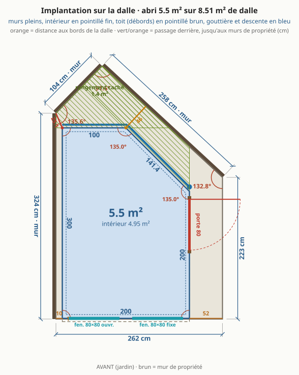
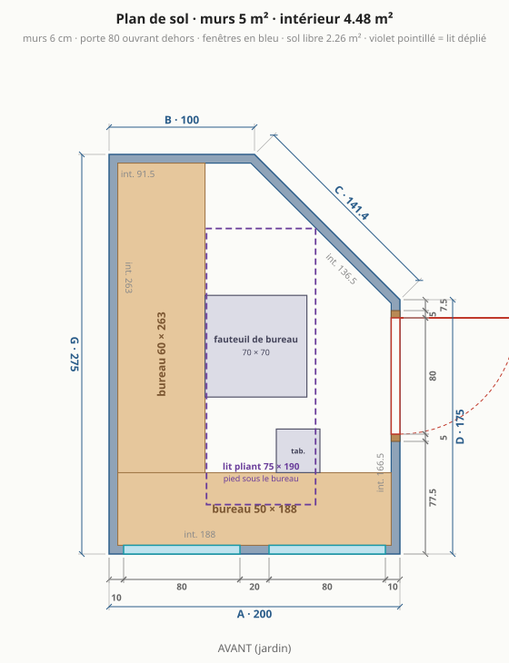
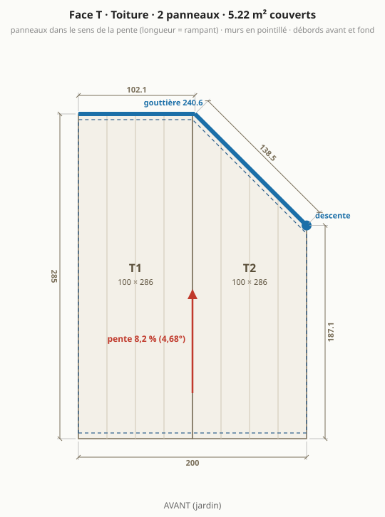
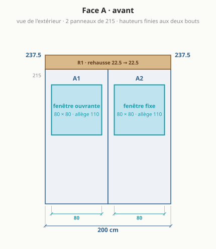
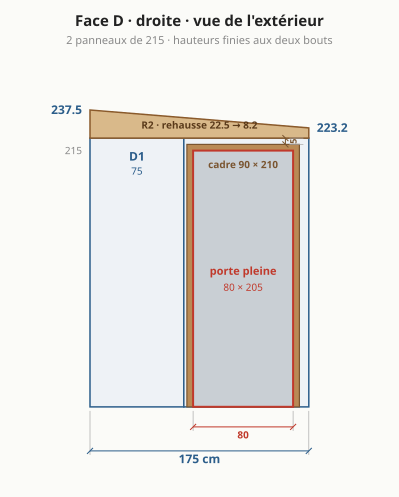
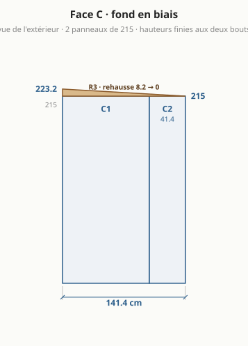
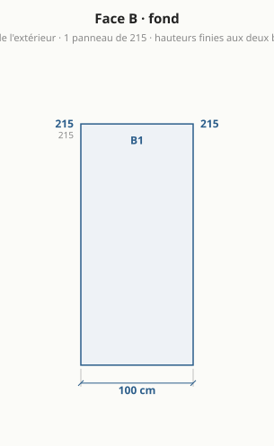
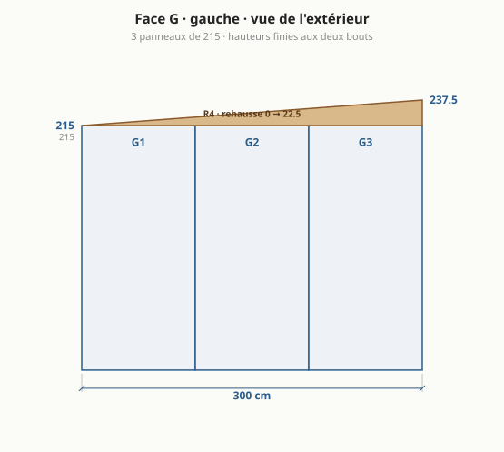
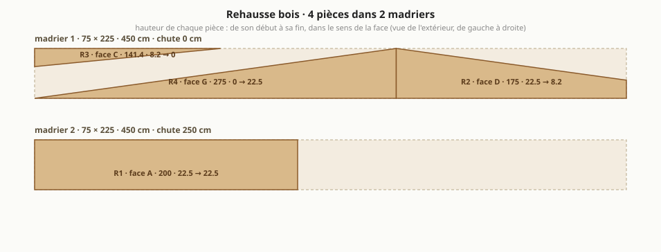

Abri de jardin : le bureau à cinq murs
Généré par
npm run emitdepuisparams.json(blocabri_v4) etsite/src/compute.ts: ne pas éditer à la main. Autres versions : version 1, version 2, version 3. Autres formes étudiées : variantes.md.

En bref
Dalle existante : 8,51 m², côtés 262 / 223 / 258 / 104 / 324 cm, murs de propriété à gauche et au fond.
4,48 m² intérieur (5 m² de murs), 57,8 cm de passage derrière.
5 murs en panneaux sandwich 6 cm autoportants : façade 200, droite 175, fond en biais 141,4, fond 100, gauche 275 cm.
Toit mono-pente vers le fond, 4,68° : 237,5 cm devant, 215 cm au plus bas.
Porte pleine 80 × 205 sur le mur droit, 2 fenêtres en façade, bureau en L sur la façade et le mur gauche.
Matériaux : 3 146 € TTC (2 674 € à 3 618 €), sans main-d'œuvre ni livraison ; équipement optionnel 259 €.
Formalités : emprise au sol 5 m², surface de plancher 4,48 m² ⇒ aucune formalité.
À trancher
- Toit : vers l'arrière, chute 22,5 cm (4,68°) = choix par défaut. Madrier 75 × 225 classe 4 : section courante, à vérifier en classe 4.
- Formalités : emprise au sol 5 m² (les débords de toit, simples et en l'air, n'entrent pas dans l'emprise au sol : Code de l'urbanisme R*420-1), surface de plancher 4,48 m² ⇒ aucune formalité (seuils 5 puis 20 m²). secteur protégé ou abords d'un monument historique : déclaration préalable même sous le seuil ; le PLU (implantation, hauteur, distance aux limites) s'applique dans tous les cas.
- Lit 75 × 190 : déplié au milieu, le pied sous un bureau, fauteuil et tabouret rangés.
- Portée du toit (~2,8 m au plus long) en 6 cm sans panne : à confirmer dans le tableau du fabricant.
- Angles non droits (135°, 135°) : profils d'angle pliés sur mesure.
Plans
Implantation sur la dalle
Plan de sol

Toiture

Face A · façade (jardin)

Face D · droite (porte)

Face C · fond en biais

Face B · fond

Face G · gauche

Rehausse bois : débit des madriers

Dimensions
| face | longueur ext. | longueur int. | hauteur finie (début → fin) | angle au début |
|---|---|---|---|---|
| A · avant | 200 cm | 188 cm | 237,5 → 237,5 cm | 90° |
| D · droite | 175 cm | 166,5 cm | 237,5 → 223,2 cm | 90° |
| C · fond en biais | 141,4 cm | 136,5 cm | 223,2 → 215 cm | 135° |
| B · fond | 100 cm | 91,5 cm | 215 → 215 cm | 135° |
| G · gauche | 275 cm | 263 cm | 215 → 237,5 cm | 90° |
Murs 5 m² · intérieur 4,48 m² (murs de 6 cm retirés) · sol libre hors bureaux 2,26 m² · hauteur sous plafond 2,32 m devant, 2,09 m au plus bas (plancher isolé déduit).
Débit
Panneaux de mur (hauteur 215 cm, pose verticale)
| pièce | largeur | provenance | découpe |
|---|---|---|---|
| A1 | 100 cm | panneau entier | fenêtre 80 × 80 |
| A2 | 100 cm | panneau entier | fenêtre 80 × 80 |
| D1 | 75 cm | panneau recoupé | – |
| D2 | 100 cm | panneau entier | porte 90 × 210 |
| C1 | 100 cm | panneau entier | – |
| C2 | 41,4 cm | panneau recoupé | – |
| B1 | 100 cm | panneau entier | – |
| G1 | 100 cm | panneau entier | – |
| G2 | 100 cm | panneau entier | – |
| G3 | 75 cm | panneau recoupé | – |
10 panneaux de mur de 100 × 215 à commander (les bandes étroites sortent des chutes).
Panneaux de toit (dans le sens de la pente, longueur = rampant)
| pièce | largeur | longueur à commander | coupe |
|---|---|---|---|
| T1 | 100 cm | 286 cm | entier, coupes droites |
| T2 | 100 cm | 286 cm | bout arrière en biais |
Débords : 5 cm devant, 5 cm au fond, rives affleurantes sur les côtés. Surface couverte 5,22 m².
Rehausse bois (madrier 75 × 225, stock 480 cm)
| pièce | face | longueur | hauteur début → fin |
|---|---|---|---|
| R1 | A | 200 cm | 22,5 → 22,5 cm |
| R2 | D | 175 cm | 22,5 → 8,2 cm |
| R3 | C | 141,4 cm | 8,2 → 0 cm |
| R4 | G | 275 cm | 0 → 22,5 cm |
2 madriers : n°1 = R4 + R3 puis R1 (chute 5 cm) ; n°2 = R2 (chute 305 cm). Deux pièces sur un même tronçon = une seule coupe en biais.
Gouttière et profils
- Gouttière 240,6 cm derrière l'abri, en 2 tronçon(s) (C 138,5 + B 102,1) : les nervures du toit mènent toute l'eau aux bouts arrière des panneaux. Descente à l'arrière du mur droit, à l'entrée du passage.
- 5 angles : G/A 90°, A/D 90°, D/C 135°, C/B 135°, B/G 90° ; hauteur de chaque angle = hauteur finie du coin.
- Rail de pied sur tout le périmètre (8,91 m), bavettes de rive sur les côtés D et G.
Ouvertures
| ouverture | taille | où | détail |
|---|---|---|---|
| porte pleine | 80 × 205 (cadre 90 × 210) | face D, de 82,5 à 162,5 cm depuis la façade | ouvre vers l'extérieur ; cadre à 5 cm du mur du fond (face intérieure) et sous le haut du mur |
| fenêtre oscillo-battante | 80 × 80 | face A, de 10 à 90 cm depuis le coin gauche | allège 110 cm, au-dessus du bureau, dans un seul panneau |
| fenêtre fixe | 80 × 80 | face A, de 110 à 190 cm depuis le coin gauche | allège 110 cm, au-dessus du bureau, dans un seul panneau |
Aménagement
| élément | taille | place |
|---|---|---|
| bureau gauche | 60 × 263 cm | tout le mur gauche |
| bureau de façade | 50 × 188 cm | tout le mur de façade |
| fauteuil de bureau | 70 × 70 cm | devant le bureau gauche |
| tabouret | 30 × 30 cm | devant le bureau de façade |
| lit pliant (déplié) | 75 × 190 cm | au milieu, pied sous un bureau, sièges rangés |
Matériaux à acheter (prix TTC, sans main-d'œuvre, sans livraison)
Panneaux · 1 132 €
| matériau | quantité | prix unitaire | montant | comment c'est compté |
|---|---|---|---|---|
| Panneaux sandwich de mur 60 mm, 100 × 215 cm (prix à confirmer) | 21,5 m² | 42 € | 903 € | 10 panneaux entiers à commander (les bandes recoupées sortent des chutes) |
| Panneaux sandwich de toiture 60 mm, nervurés, teinte claire (prix à confirmer) | 5,72 m² | 40 € | 229 € | 2 panneaux coupés à longueur : T1 286 cm, T2 286 cm |
Bois · 179 €
| matériau | quantité | prix unitaire | montant | comment c'est compté |
|---|---|---|---|---|
| Madrier 75 × 225 classe 4 (rehausse, lisse haute) (prix à confirmer) | 9,6 ml | 14 € | 134 € | 2 pièce(s) de 480 cm |
| Panne intermédiaire 75 × 150 classe 4, en travers à mi-profondeur (prix à confirmer) | 2 ml | 10 € | 20 € | portée du toit 2,8 m : une panne de la longueur de la façade la ramène à 1,4 m |
| Bois du cadre de porte, section 50 × 60 mm (prix à confirmer) | 5 ml | 5 € | 25 € | deux montants + une traverse haute |
Profils et bavettes · 462 €
| matériau | quantité | prix unitaire | montant | comment c'est compté |
|---|---|---|---|---|
| Profil de départ en U (rail de pied) (prix à confirmer) | 8,01 ml | 9 € | 72 € | périmètre des murs moins le cadre de la porte |
| Profils d'angle à 90°, extérieur + intérieur (prix à confirmer) | 13,8 ml | 10 € | 138 € | 3 angles droits, hauteur finie de chaque coin, deux faces |
| Profils d'angle pliés sur mesure (135°), extérieur + intérieur (prix à confirmer) | 8,76 ml | 18 € | 158 € | 2 angles non droits, deux faces |
| Bandes de rive de toit (prix à confirmer) | 4,72 ml | 12 € | 57 € | bords du toit parallèles à la pente |
| Bavette de tête (bord haut du toit) (prix à confirmer) | 2 ml | 12 € | 24 € | bord haut du toit |
| Closoirs mousse sous les nervures (prix à confirmer) | 4,41 ml | 3 € | 13 € | bord haut + bord d'égout |
Fixations · 49 €
| matériau | quantité | prix unitaire | montant | comment c'est compté |
|---|---|---|---|---|
| Vis autoperceuses de toiture à rondelle, longues (panneau + nervure dans le bois) (prix à confirmer) | 0,27 cent | 45 € | 12 € | 2 panneaux × 3 appuis × 4 vis, +10 % |
| Vis de couture (recouvrements de panneaux, bavettes, profils) (prix à confirmer) | 0,65 cent | 12 € | 8 € | un recouvrement tous les 40 cm, une bavette tous les 30 cm, +10 % |
| Vis autoperceuses de panneaux de mur (pied et tête) (prix à confirmer) | 0,66 cent | 25 € | 17 € | 10 panneaux × 2 extrémités × 3 vis, +10 % |
| Chevilles ou goujons pour fixer le rail dans la dalle (prix à confirmer) | 20 u | 1 € | 12 € | une tous les 50 cm |
Étanchéité · 122 €
| matériau | quantité | prix unitaire | montant | comment c'est compté |
|---|---|---|---|---|
| Bande d'arase sous le rail de pied (prix à confirmer) | 8,91 ml | 2 € | 13 € | périmètre des murs |
| Bande butyle (joints de panneaux, tête de mur sous la rehausse) (prix à confirmer) | 22,41 ml | 1 € | 27 € | 5 joints de mur × 2,2 m + périmètre + recouvrements de toit |
| Mastic polyuréthane ou MS polymère, cartouches (prix à confirmer) | 4 cartouche | 9 € | 36 € | une cartouche pour 8 m de cordon : pied de mur dedans et dehors, tour des ouvertures |
| Bande comprimée au pourtour des ouvertures (prix à confirmer) | 11,3 ml | 3 € | 28 € | tour de la porte et des fenêtres |
| Mousse polyuréthane expansive, bombes (prix à confirmer) | 2 bombe | 9 € | 18 € | calfeutrement des ouvertures et des angles |
Ouvertures · 820 €
| matériau | quantité | prix unitaire | montant | comment c'est compté |
|---|---|---|---|---|
| Porte de service pleine isolée 80 × 205 cm, avec dormant (prix à confirmer) | 1 u | 450 € | 450 € | une porte |
| Fenêtre fixe PVC double vitrage 80 × 80 cm (prix à confirmer) | 1 u | 150 € | 150 € | fenêtres fixes |
| Fenêtre oscillo-battante PVC double vitrage 80 × 80 cm (prix à confirmer) | 1 u | 220 € | 220 € | fenêtres ouvrantes |
Eaux pluviales · 87 €
| matériau | quantité | prix unitaire | montant | comment c'est compté |
|---|---|---|---|---|
| Gouttière demi-ronde (prix à confirmer) | 2,41 ml | 6 € | 14 € | 2 tronçon(s) : C 138,5 cm + B 102,1 cm |
| Crochets de gouttière (prix à confirmer) | 6 u | 3 € | 15 € | un tous les 50 cm |
| Naissance, fonds, angle, coudes et colliers (lot) (prix à confirmer) | 1 lot | 35 € | 35 € | un angle, une naissance, deux fonds, deux coudes, deux colliers |
| Tuyau de descente (prix à confirmer) | 3,9 ml | 6 € | 23 € | hauteur du mur + le retour au sol le long du mur droit jusqu'au jardin |
Plancher isolé · 255 €
| matériau | quantité | prix unitaire | montant | comment c'est compté |
|---|---|---|---|---|
| Lambourdes traitées (entraxe 40 cm) (prix à confirmer) | 13 ml | 2 € | 26 € | surface intérieure ÷ 0,40 m, +10 % |
| Isolant rigide 40 mm entre lambourdes (prix à confirmer) | 4,7 m² | 12 € | 56 € | surface intérieure, +5 % |
| Film polyéthylène sous le plancher (prix à confirmer) | 5,15 m² | 1 € | 5 € | surface intérieure, +15 % de recouvrements |
| Dalles OSB3 18 mm rainurées (prix à confirmer) | 4,93 m² | 14 € | 69 € | surface intérieure, +10 % de chutes |
| Revêtement de sol (vinyle ou stratifié) (prix à confirmer) | 4,93 m² | 20 € | 99 € | surface intérieure, +10 % de chutes |
Équipement (optionnel) · 259 €
| matériau | quantité | prix unitaire | montant | comment c'est compté |
|---|---|---|---|---|
| Grilles ou entrées d'air murales (prix à confirmer) | 2 u | 15 € | 30 € | une basse, une haute, sur deux murs opposés |
| Goulotte électrique 2 m (prix à confirmer) | 3 u | 8 € | 24 € | la moitié du périmètre, en longueurs de 2 m |
| Multiprise parafoudre (prix à confirmer) | 1 u | 25 € | 25 € | sur le câble déjà en place |
| Réglette ou plafonnier LED (prix à confirmer) | 1 u | 30 € | 30 € | un point lumineux |
| Radiateur panneau 750 W à thermostat (prix à confirmer) | 1 u | 90 € | 90 € | bureau chauffé toute l'année |
| Stores des fenêtres de façade (prix à confirmer) | 2 u | 30 € | 60 € | un par fenêtre |
Consommables · 40 €
| matériau | quantité | prix unitaire | montant | comment c'est compté |
|---|---|---|---|---|
| Lame de scie circulaire pour métal (coupe à froid des panneaux) (prix à confirmer) | 1 u | 40 € | 40 € | jamais de meuleuse : elle brûle le laquage et la mousse |
Total des matériaux : 3 146 € TTC (fourchette 2 674 € à 3 618 €, ±15 %). Équipement optionnel en plus : 259 €. Hors total : Livraison des panneaux (service, hors total) ≈ 250 €.
Prix relevés chez des marchands français (prix_materiaux_eur_ttc dans params.json, source notée pour chacun) ; les quantités se recalculent avec l'abri.
Guide de montage
Avant de commander
- Faire confirmer par le fournisseur la largeur utile des panneaux (100 cm ici) : tout le calepinage en dépend.
- Faire confirmer la portée admise du panneau de toit de 6 cm : 2,8 m ici, ramenée à 1,4 m par la panne intermédiaire ; et la pente minimale (8,2 % ici).
- Commander les panneaux de toit coupés à longueur, et les profils des angles de 135° pliés sur mesure, en même temps que les panneaux.
- Vérifier au PLU la règle d'implantation près de la limite (l'abri est à 10 cm du mur de propriété).
- Prévoir deux personnes pour lever les murs et poser le toit, et une journée sans vent : un panneau de 2 m² est une voile.
Outillage
- Scie circulaire avec lame pour métal (coupe à froid) et rail de guidage ; scie sauteuse lame métal pour les angles des ouvertures. Pas de meuleuse : elle brûle le laquage et la mousse, et ses étincelles piquent la tôle.
- Visseuse à choc avec douilles 8 mm, perforateur et foret béton, cordeau à tracer, mètre de 5 m, niveau de 1,20 m ou laser, grande équerre, fil à plomb.
- Pistolet à mastic, cutter, serre-joints, 4 étais ou chevrons pour tenir les murs pendant le montage, échelle ou escabeau stable.
- Gants anti-coupure, lunettes, protection auditive. Les rives de tôle coupent.
Étape 1 · Tracer l'abri sur la dalle
Tout le reste s'aligne sur ce tracé : dix minutes de plus ici évitent un mur qui ne ferme pas.
Outils : cordeau, mètre, grande équerre
- Tracer la façade à 10 cm du bord avant de la dalle et le mur gauche à 10 cm du bord gauche.
- Reporter les 5 murs dans l'ordre : A 200 cm, D 175 cm, C 141,4 cm, B 100 cm, G 275 cm.
- Angles, dans le même ordre : 90°, 90°, 135°, 135°, 90°.
À contrôler avant de continuer :
- Diagonales du tracé : coin avant gauche → haut du mur droit = 265,8 cm ; coin avant droit → coin arrière gauche = 340 cm.
- Passage derrière l'abri : 57,8 cm au plus étroit, à mesurer une fois le tracé fait.
Étape 2 · Poser le rail de pied
Le rail tient le pied des panneaux et les isole de l'eau de la dalle.
Outils : perforateur, visseuse, niveau
- Dérouler la bande d'arase sur le tracé (8,91 m), poser le profil en U dessus, nu extérieur du rail sur le trait.
- Cheviller tous les 50 cm, et à 10 cm de chaque angle.
- Interrompre le rail sur la largeur du cadre de la porte (90 cm, face D).
- Cordon de mastic continu entre le rail et la dalle, côté extérieur.
À contrôler avant de continuer :
- Rail de niveau : caler si la dalle a plus de 5 mm de faux niveau sur un mur.
- Angles du rail conformes au tracé avant de cheviller le dernier mur.
Étape 3 · Préparer toutes les coupes à plat
Un panneau se coupe bien sur tréteaux, mal une fois debout.
Outils : scie circulaire lame métal, rail de guidage, scie sauteuse
- Bandes de mur : D1 75 cm, C2 41,4 cm, G3 75 cm. Couper dans la longueur, face laquée vers le bas, et garder les chutes : elles fournissent les autres bandes.
- Fenêtres : 80 × 80 cm, bas à 110 cm ; 80 × 80 cm, bas à 110 cm, une par panneau, jamais sur un joint. Percer les quatre angles, puis couper à la scie sauteuse.
- Toit : T2 à couper en biais d'après le plan de toiture.
- Rehausse : R1 (mur A, 200 cm, 22,5 → 22,5 cm), R2 (mur D, 175 cm, 22,5 → 8,2 cm), R3 (mur C, 141,4 cm, 8,2 → 0 cm), R4 (mur G, 275 cm, 0 → 22,5 cm), tirées de 2 madrier(s) selon le plan de débit.
À contrôler avant de continuer :
- Retirer le film de protection des panneaux au fur et à mesure : après quelques semaines au soleil il ne part plus.
- Ébavurer chaque coupe et passer une retouche de peinture sur la tôle mise à nu.
Étape 4 · Monter le mur gauche à plat, puis le lever
À 10 cm du mur de propriété aucune visseuse ne passe : ce mur se fait au sol.
Outils : visseuse, serre-joints, 2 personnes, étais
- Assembler G1 (100), G2 (100), G3 (75) à plat, butyle dans chaque joint, et visser dessus leur pièce de rehausse.
- Placer la bande de 75 cm côté façade, la seule extrémité qu'on atteindra ensuite.
- Lever le mur à deux, l'engager dans le rail, le tenir par deux étais vissés dans la rehausse.
- Visser le pied dans le rail depuis l'intérieur.
À contrôler avant de continuer :
- Aplomb dans les deux sens avant de lâcher les étais.
- Vide de 10 cm régulier sur toute la longueur.
Étape 5 · Monter les autres murs
On tourne dans un seul sens pour que chaque panneau s'emboîte dans le précédent.
Outils : visseuse, niveau, étais
- Mur B (fond, 100 cm) : B1 (100).
- Mur C (fond en biais, 141,4 cm) : C1 (100), C2 (41,4).
- Mur D (droite, 175 cm) : D1 (75), D2 (100), en laissant le vide du cadre de porte.
- Mur A (façade, 200 cm) : A1 (100), A2 (100).
- Butyle dans chaque emboîtement, panneau serré contre le précédent, vissé au pied dans le rail.
- Étayer chaque mur tant que la rehausse n'est pas posée : avant elle, rien ne tient les têtes.
À contrôler avant de continuer :
- Aplomb de chaque panneau avant de visser le suivant : l'erreur se cumule.
- Têtes de murs toutes à 215 cm, à 3 mm près, au niveau laser.
Étape 6 · Fermer les angles
Les profils d'angle lient deux murs et ferment la mousse.
Outils : visseuse, mastic
- Profil extérieur puis intérieur à chacun des 5 angles, vissé tous les 30 cm (vis de couture), mastic sous les deux ailes.
- Les angles de 135° reçoivent les profils pliés sur mesure : les présenter à blanc avant de percer.
- Bourrer le vide de l'angle à la mousse avant de fermer le profil intérieur.
À contrôler avant de continuer :
- Aucun jour entre profil et panneau : c'est là que l'air et l'eau entrent.
Étape 7 · Poser la rehausse bois
Elle donne la pente au toit et sert de lisse haute : c'est elle qui tient les murs entre eux.
Outils : visseuse, serre-joints
- Poser R1 sur A, R2 sur D, R3 sur C, R4 sur G, sur un cordon de butyle en tête de panneaux.
- Visser la rehausse dans la tôle des deux faces de chaque panneau, tous les 40 cm.
- Assembler les pièces entre elles aux angles par deux longues vis en biais.
À contrôler avant de continuer :
- Hauteurs finies des coins : 237,5 · 237,5 · 223,2 · 215 · 215 cm (dans l'ordre des coins, à partir du coin avant gauche).
- Dessus de la rehausse dans un même plan : poser une règle d'un mur à l'autre.
Étape 8 · Poser la panne intermédiaire
Le toit porte sur 2,8 m : une panne en travers ramène la portée à 1,4 m.
Outils : visseuse, niveau
- Poser un bois de 75 × 150 de 200 cm en travers, à mi-profondeur, du mur gauche au mur droit, porté par deux sabots ou deux tasseaux vissés dans la rehausse.
- Régler son dessus dans le plan du toit : il est plus bas que la rehausse de façade et plus haut que celle du fond.
À contrôler avant de continuer :
- Une règle posée de la façade au fond touche la panne sans la forcer.
Étape 9 · Couvrir
Nervures dans le sens de la pente, vers le fond : l'eau ne quitte le toit que par le bas des panneaux.
Outils : visseuse, 2 personnes, échelle
- Poser T1 (100 × 286 cm), T2 (100 × 286 cm), en commençant du côté opposé aux vents dominants.
- Closoirs mousse sous les nervures, en haut et en bas, avant de visser.
- Visser dans la rehausse et dans la panne par le sommet des nervures, vis longues à rondelle, quatre par panneau et par appui. Serrer jusqu'à écraser la rondelle, pas plus.
- Recouvrements entre panneaux : butyle, puis vis de couture tous les 40 cm.
- Bandes de rive sur les bords parallèles à la pente, bavette de tête sur le bord haut.
À contrôler avant de continuer :
- Débords : 5 cm devant, 5 cm au fond, 0 cm à droite, 0 cm à gauche.
- Ne jamais marcher entre deux appuis : marcher au droit des murs, sur une planche.
Étape 10 · Gouttière et descente
Recueillir toute l'eau du toit et l'emmener au jardin.
Outils : visseuse, niveau, scie à métaux
- 240,6 cm de gouttière en 2 tronçon(s) : C 138,5 cm + B 102,1 cm.
- Crochets tous les 50 cm, pente de 5 mm par mètre vers la descente.
- Descente au bout droit de la gouttière, puis un tuyau au sol le long du mur droit jusqu'au jardin : rien ne doit s'écouler au pied du mur de propriété.
À contrôler avant de continuer :
- Verser un seau d'eau en haut du toit : tout doit arriver à la descente.
Étape 11 · Poser la porte
Le cadre bois reprend la porte : le panneau seul ne porte pas de paumelles.
Outils : visseuse, niveau, cales
- Monter le cadre bois de 90 × 210 cm dans le vide du mur D, vissé dans la dalle en pied et dans la rehausse en tête.
- Poser la porte pleine de 80 × 205 cm dans le cadre, ferrée côté fond, ouvrant vers l'extérieur.
- Bande comprimée entre dormant et cadre, mastic à l'extérieur, seuil sur cordon de mastic.
À contrôler avant de continuer :
- Jeu régulier de 3 mm autour du battant, la porte se ferme sans forcer.
- Arrêt de porte à prévoir : ouverte, elle prend le vent.
Étape 12 · Poser les fenêtres
Une fenêtre se fixe dans la tôle des deux faces, jamais dans la mousse.
Outils : visseuse, niveau, cales
- 2 fenêtre(s) en façade : oscillo-battante de 10 à 90 cm ; fixe de 110 à 190 cm.
- Habiller la tranche de la découpe d'un profil en U ou d'un tasseau, caler la fenêtre, visser par le dormant.
- Bande comprimée au pourtour, mastic dehors, bavette d'appui sous la fenêtre.
À contrôler avant de continuer :
- Niveau et aplomb du dormant avant le serrage final.
- L'ouvrante s'ouvre sans toucher le bureau.
Étape 13 · Étanchéité générale
L'air qui entre apporte l'humidité qui condense sur l'acier.
Outils : pistolet à mastic, mousse
- Cordon de mastic au pied des murs, dedans et dehors.
- Fermer le vide de 10 cm contre le mur de propriété : bavette devant, grillage fin au fond (feuilles, rongeurs), sans bloquer l'écoulement de l'eau.
- Mousse puis mastic à chaque traversée (câble, entrée d'air).
À contrôler avant de continuer :
- De nuit, une lampe allumée dedans : aucun jour visible de dehors.
Étape 14 · Plancher isolé
La dalle est froide : le plancher fait le confort des pieds.
Outils : scie, visseuse
- Film polyéthylène sur la dalle, remonté de 10 cm le long des murs.
- Lambourdes tous les 40 cm, calées de niveau, isolant rigide de 40 mm entre elles.
- Dalles OSB de 18 mm vissées, joints décalés, 8 mm de jeu contre les murs ; revêtement de sol ensuite.
À contrôler avant de continuer :
- Hauteur sous plafond après plancher : 2,32 m au plus haut, 2,09 m au plus bas.
Étape 15 · Ventilation, électricité, aménagement
Une pièce étanche et chauffée sans ventilation condense.
Outils : scie cloche, visseuse
- Deux entrées d'air sur deux murs opposés, une basse et une haute.
- Électricité en apparent, sous goulotte, depuis le câble existant : on ne perce pas la tôle extérieure pour un câble.
- Bureaux sur pieds ou sur équerres au sol : 60 × 263 cm à gauche, 50 × 188 cm en façade. Les parements de 0,5 mm ne portent pas une charge suspendue.
À contrôler avant de continuer :
- Après une semaine chauffée : aucune trace de condensation aux angles ni autour des fenêtres.
Pourquoi cette version
Comparée à la version 3, dont elle reprend les réglages.
| version 3 (abri-v3.md) | version 4 | |
|---|---|---|
| murs (extérieur) | 5 m² | 5 m² |
| intérieur | 4,48 m² | 4,48 m² |
| emprise au sol (débords de toit exclus, R*420-1) | 5 m² | 5 m² |
| formalités (seuils 5 puis 20 m²) | aucune formalité | aucune formalité |
| murs | 5 : A 200 · D 175 · C 141,4 · B 100 · G 275 cm | 5 : A 200 · D 175 · C 141,4 · B 100 · G 275 cm |
| angles | 90° · 90° · 135° · 135° · 90° | 90° · 90° · 135° · 135° · 90° |
| faces en panneaux entiers | A, B | A, B |
| bandes de mur de moins de 30 cm | 0 | 0 |
| panneaux de mur à commander | 10 | 10 |
| passage derrière l'abri | 57,8 cm | 57,8 cm |
| sens du toit | vers la droite (jardin) | vers le fond (mur de propriété) |
| pente | 11,2 % (6,42°), chute 22,5 cm | 8,2 % (4,68°), chute 22,5 cm |
| portée du toit sans panne | 2 m | 2,75 m |
| panneaux de toit | 3, dont 2 coupé(s) en biais et 0 de moins de 30 cm de large | 2, dont 1 coupé(s) en biais et 0 de moins de 30 cm de large |
| gouttière et descente | 322,6 cm sur D + C, descente devant à droite, côté jardin | 240,6 cm sur C + B, descente à l'arrière du mur droit, à l'entrée du passage |
| rehausse | 4 pièces, 2 madrier(s) 75 × 225 | 4 pièces, 2 madrier(s) 75 × 225 |
| hauteurs finies des coins | 237,5 · 215 · 215 · 226,2 · 237,5 cm | 237,5 · 237,5 · 223,2 · 215 · 215 cm |
| espace caché derrière l'abri | 1,74 m², jusqu'à 113 cm de profondeur | 1,74 m², jusqu'à 113 cm de profondeur |
| porte | pleine, 80 × 205, débord de toit au-dessus : 15 cm | pleine, 80 × 205, débord de toit au-dessus : 0 cm |
| fenêtres en façade | 80 ouvrante + 80 fixe | 80 ouvrante + 80 fixe |
| sol libre hors bureaux | 2,26 m² | 2,26 m² |
| lit | 75 × 190, pliant, posé au sol libre | 75 × 190, pliant, posé au sol libre |
| budget indicatif HT | 3 138 € (coque 2 883 €) | 3 146 € (coque 2 891 €) |
Ce que cette disposition apporte
- Une façade droite et haute : 237,5 cm d'un bout à l'autre, le toit ne se voit pas pencher depuis le jardin ni depuis la maison. Dans la version 3 la façade descend de 237,5 à 215 cm vers la porte.
- La gouttière est derrière, invisible : 240.6 cm le long du mur du fond puis du pan à 45°. Les nervures des panneaux de toit vont de l'avant vers l'arrière, toute l'eau arrive donc aux bouts arrière des panneaux, et nulle part ailleurs.
- Un panneau de toit en moins : 2 panneaux au lieu de 3, dans le sens de la profondeur, sans bande étroite. Un seul porte une coupe en biais, le long du pan à 45°.
- Le mur contre la propriété n'est plus le mur haut : il descend de 237,5 cm devant à 215 cm au fond, au lieu de rester à 237,5 cm sur toute sa longueur. Moins de mur visible au-dessus du mur du voisin.
- Débord de 5 cm devant : il protège un peu les fenêtres de façade, que la version 3 laisse à nu.
Ce que la version 4 perd
- Portée du toit : 2,8 m au lieu de 2 m. Les panneaux vont de la façade au mur du fond. C'est l'hypothèse la plus fragile du projet pour du 60 mm : à faire confirmer par le fabricant, ou prévoir une panne en bois en travers, à mi-profondeur (2 m de portée, elle relie aussi le mur gauche au mur droit).
- Pente 8,2 % au lieu de 11,2 % : la même chute de 22,5 cm s'étale sur 2,8 m au lieu de 2 m. C'est peu pour une toiture en panneaux ; une chute de 30 cm donnerait 10 %, mais demande un madrier de 300, introuvable en stock (ou deux pièces superposées).
- La descente n'a pas de bonne place. Au coin arrière gauche, le point bas naturel, elle est coincée entre deux murs, hors d'atteinte, et l'eau finit au pied du mur de propriété. Placée à l'arrière du mur droit, à l'entrée du passage, comme ici, elle se trouve dans le passage qu'on veut garder libre, et il faut encore un tuyau le long du mur droit pour amener l'eau au jardin. La version 3 la met devant, côté jardin, sur la dalle.
- La gouttière du pan à 45° est à contre-pente : le bord du toit y monte de 7,5 cm vers le mur droit, la gouttière doit descendre dans l'autre sens. Elle pend donc de 8 à 9 cm sous le bord du toit à son bout droit.
- Plus d'abri au-dessus de la porte : le débord de 15 cm de la version 3 venait gratuitement de la longueur des panneaux. Ici un débord à droite demande un panneau de toit de plus, refendu. Prévoir une marquise.
- Gouttière dans le passage : à 2,05 m du sol environ, au point où le passage fait 57 cm. Avec un débord arrière de 5 cm, le bord du toit et la gouttière avancent d'une quinzaine de centimètres au-dessus du passage : on passe dessous, mais elle se nettoie dans un couloir étroit, pas depuis le jardin.
Pourquoi
- Pourquoi les nervures décident : un panneau sandwich de toiture a des nervures dans sa longueur, et il se pose nervures dans le sens de la pente. L'eau ne quitte donc le toit que par les bouts bas des panneaux. Toit vers le fond : gouttière au fond, sur les deux bords où finissent les panneaux (mur du fond et pan à 45°). Le modèle applique cette règle à toute forme.
- Tout le reste est celui de la version 3 : mêmes cinq murs, même intérieur, même passage, porte pleine sur le côté, deux fenêtres de 80 × 80. Le tableau ne montre que ce que le sens du toit change.
Conseils que les plans ne montrent pas
- La panne intermédiaire conseillée n'est ni dessinée ni chiffrée : un bois de 75 × 150 environ, 2 m, posé sur les murs gauche et droit.
- Le tuyau qui ramène l'eau de la descente au jardin (2 m le long du mur droit, au sol) n'est pas chiffré non plus.
- Une marquise au-dessus de la porte est à ajouter au budget.